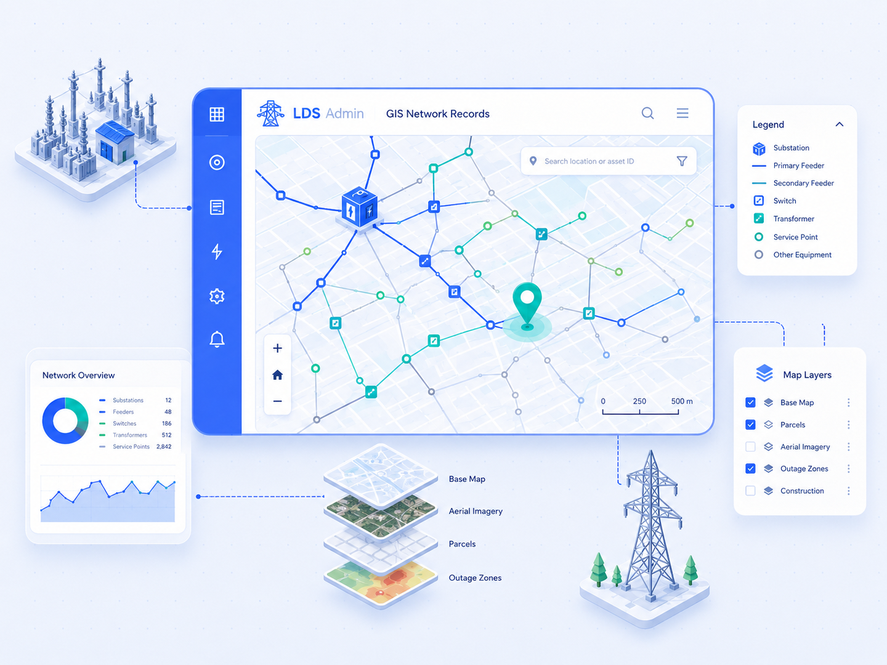

Network layers
Substations, feeders, switches, supply points and relationships between assets.
The map layer connects technical records with asset location, network status, documentation and intervention history.

The content helps users quickly understand module value while giving search engines clear context.
Substations, feeders, switches, supply points and relationships between assets.
Operators see location, status, documentation and intervention history without long searching.
Support for manual drawing, geodetic data and attached documentation.
Inspections, tasks and protocols stay tied to a specific place.
The map helps evaluate event impact on the network and supply points.
One map context reduces duplicates and improves traceability.
Contact us and we will review the right deployment, integrations and next steps for your teams.